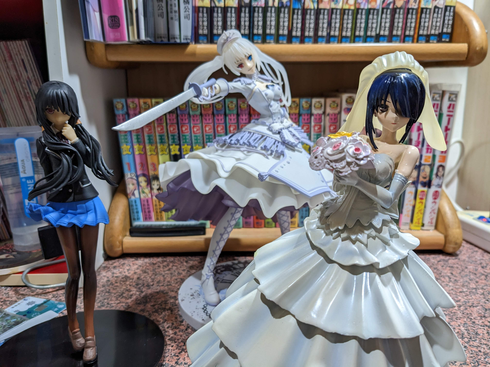
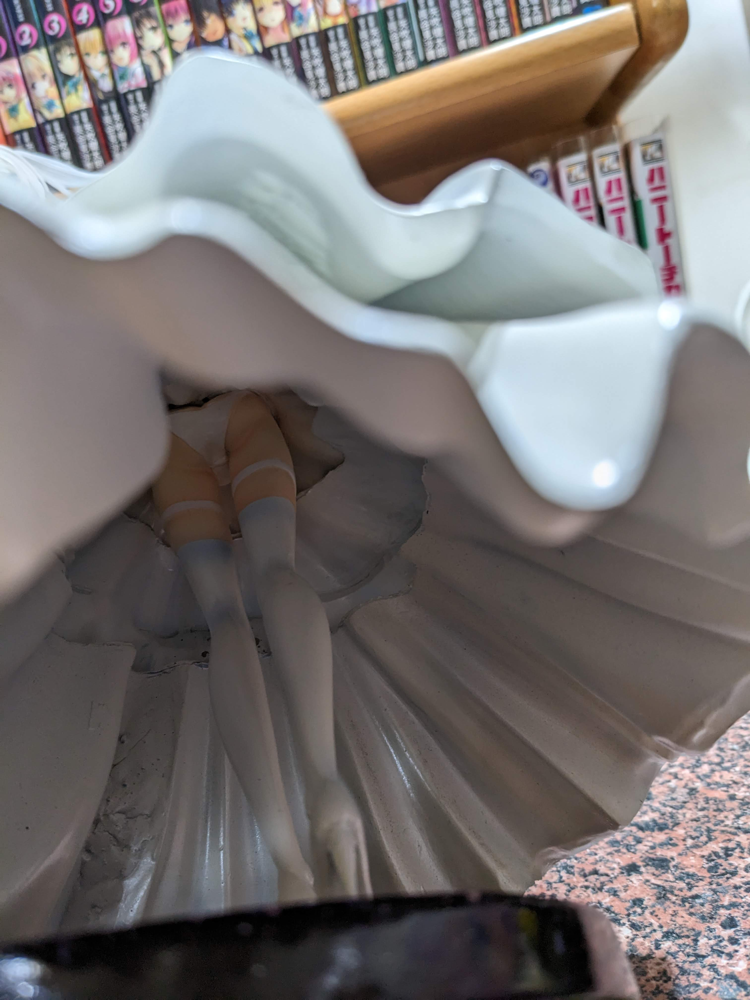

其實我不確定是不是港版，但是他的價格的品質我就直接這樣稱呼了
最近在沒屋頂收了這三隻港版的狂三，算是補足我一直沒有收到的部分。
既然不是什麼高品質的東西，我的桌面就不整理了，隨意看看吧

從圖片的可以看得出來婚紗的這隻材質相當不一樣，
看起來反射很強，感覺很像是陶瓷那類的質感，同時也非常重
因為頭紗的卡榫不是做得很好，我索性就把他拔了，
之後我就選幾個看起來比較好看的角度來拍

這隻做工真的蠻粗糙的，其中身體的很多分件甚至是鐵絲來固定的
接下來是制服的
裙底用手機照不出來，就保持一些神秘感吧
這隻的材質就類似景品的感覺了，也幾乎沒有分件。
最後是白女王
因為眼睛在其他角度看起來怪怪的，所以後面我就盡量迴避掉
下面有點偷懶阿w
--
其實制服跟婚紗的這兩隻我記得是很久以前就出的，
照理來說看到狂三的模型我都會秒收，
當初沒收是因為我記得有出GK版本的，當初在看會不會有賣塗裝完成的可以買，
所以一直不想收這兩隻港版的，
有趣的是，印象中制服跟婚紗狂三這兩隻都比日廠還要早出，你就可以知道這兩隻的年紀了。
而白女王這隻算是比較新的，畢竟白女王也是後來才出來的，
這裡也可以發現技術的進步，雖然還是港版，但是整體的細節都做得比較好。
值得一提的是，賣家看的出來也是收了一堆狂三，
但是似乎是扛不住無窮無盡的狂三根本收不完，所以才開始脫手，
一來我很欣慰也有人跟我一樣收很多狂三，二來我也不知道我扛不扛的住w
約戰都完結了，不會再出了吧..吧?
--
終於距離退伍不到一個月了，
在軍中也有趁著一些機會慢慢練習回一些基本功，我想應該慢慢可以有一些作品產出，
有機會應該也會分享一下軍中的心得吧。